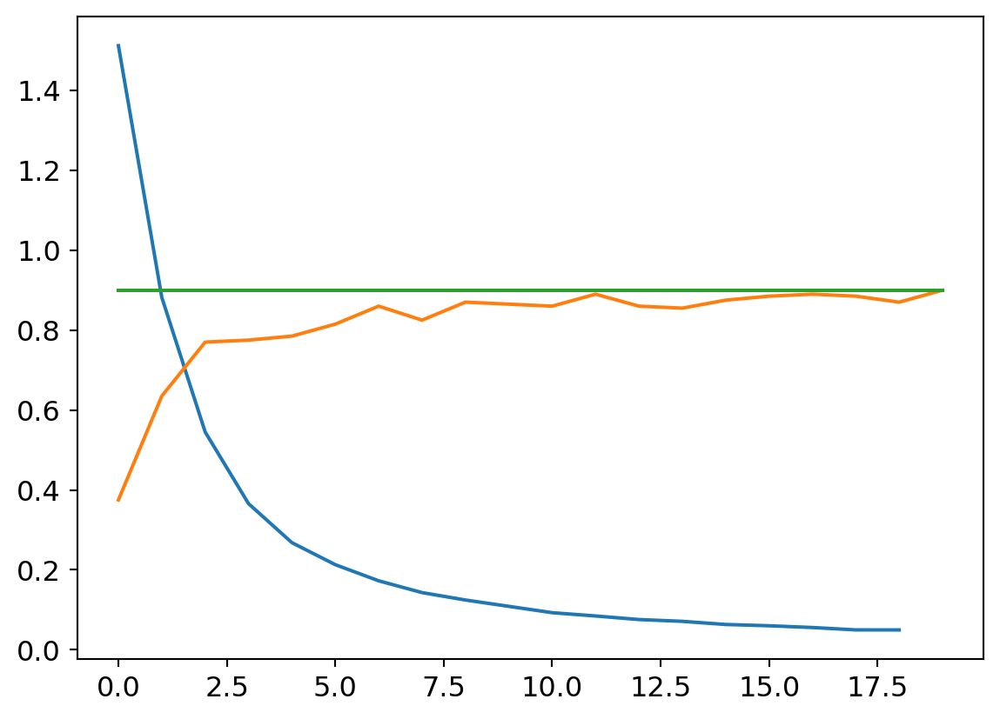
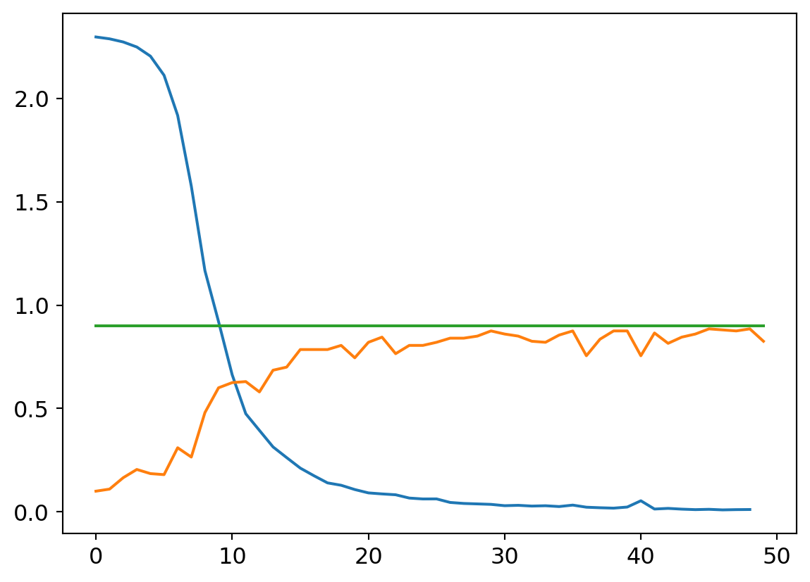
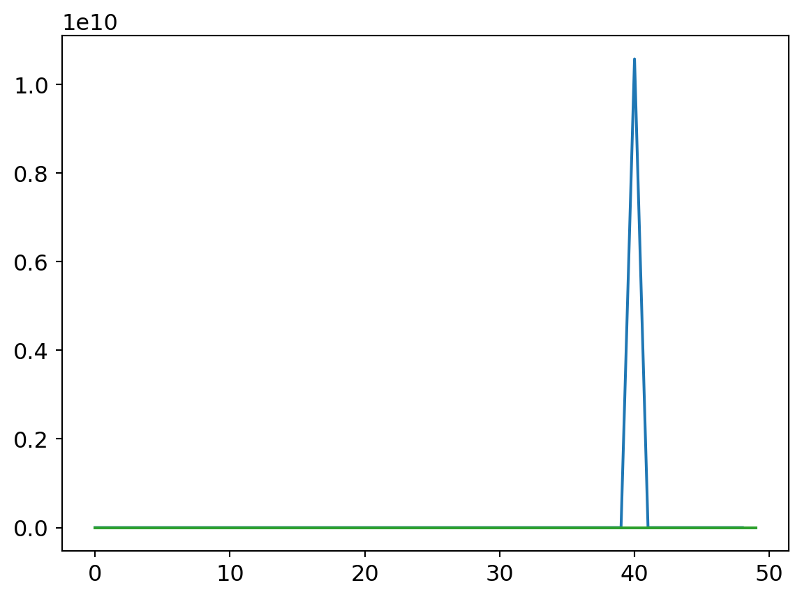
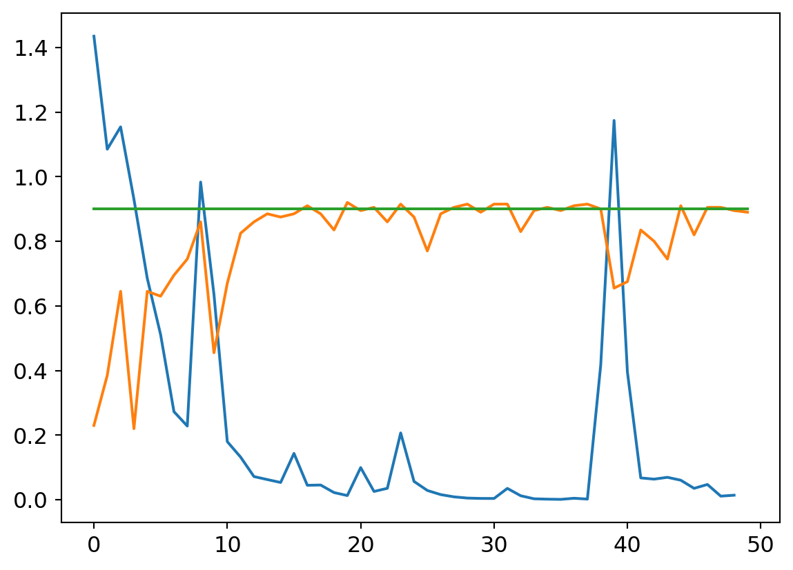
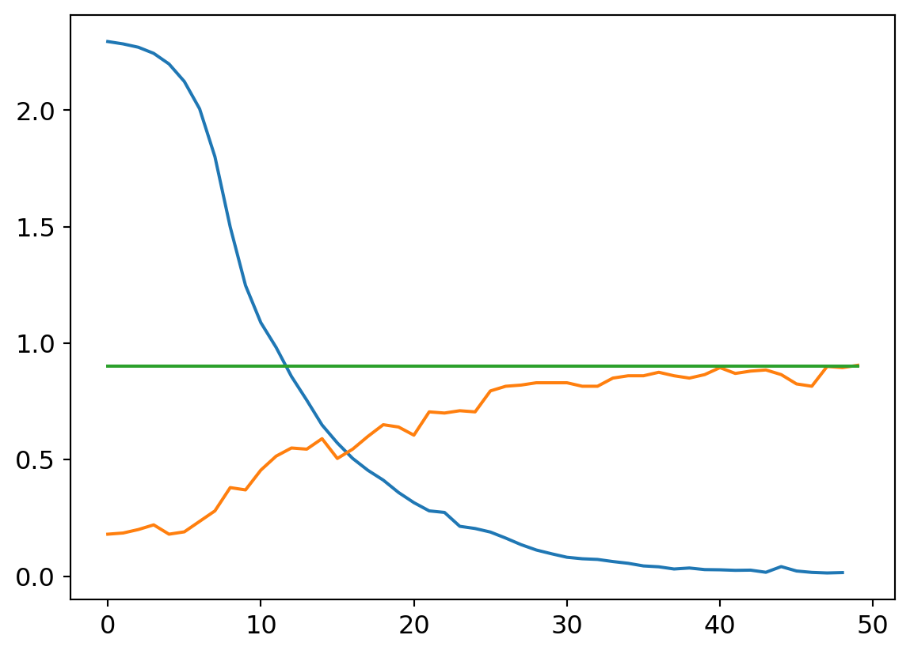
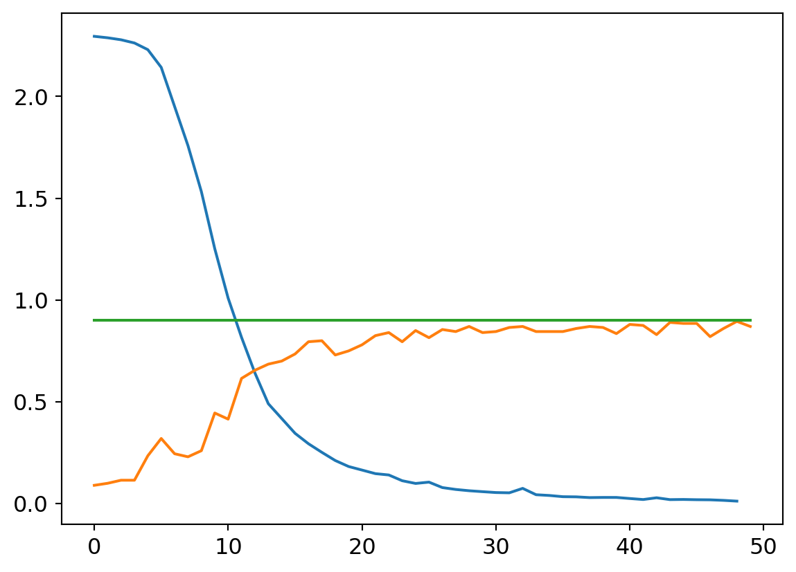

TL;DR
The best way to learn is to teach, so in this post I try to teach the reader how my first neural network implementation works! Part 2 of 2. I built this in following along with the awesome lessons over at fast.ai. Many thanks to that team.
Overview
We’re going to jump in where we left off in Part 1: We’ll just reimport our data, and get into it.
What?
We’re going to create a neural network that, given a picture of a numeric digit, identifies the number.
Why?
Does this really need explaining? Because the technology is amazing in both practical and philosophical ways.
Who?
Who am I!? Who are you?!
How?
Using PyTorch1, an opensource toolkit for building neural networks. Truly an elevator ride up onto the shoulders of giants.
Code Review
We’ll first just re-import our data, and then get into building the groundwork for our neural network
Let’s get into it!
The required dependencies!:scikit-learn, fastbook, matplotlib
Data Acquisition
A quick flashback to Part 1 of my Building A Digit Classifier blog!:
Pre-processing data before even touching any neural net methods can improve your final performance. Note the data set information offered at the source page:
We used preprocessing programs made available by NIST to extract normalized bitmaps of handwritten digits from a preprinted form. From a total of 43 people, 30 contributed to the training set and different 13 to the test set. 32x32 bitmaps are divided into nonoverlapping blocks of 4x4 and the number of on pixels are counted in each block. This generates an input matrix of 8x8 where each element is an integer in the range 0..16. This reduces dimensionality and gives invariance to small distortions.
Code
mnist = load_digits()
stacked = []
# This loop because stacked=[[]]*10 makes 1 list in list, with 10 copies of pointers... need separate objects
for i in range(10):
stacked.append([])
# Assign all images to the right collection in the 'stacked' list, indexed by target
for i in range(len(mnist["target"])):
stacked[mnist["target"][i]].append(mnist["images"][i])Segmentation
The next step is to define which data will be our training, and our validation set. It was important to bucket out our data first so by randomly sampling our data we didn’t generate a validation set with a large imbalance in the number of classes to be tested in it.
First we convert to a tensor, then segment training from validation data. Arbitrarily taking 20 examples from each digit, so, 11.5% of the total data set towards validation.
We’ll print out the size of these collections and take a peek at a sample to make sure we indexed right.
Code
# To make dataset a tensor, make it same number of dimensions
stacked = tensor([x[:174] for x in stacked])
# Segmentation: Pull 20 of each digit out of training set
test = [dig[-20:] for dig in stacked]
train = [dig[:-20] for dig in stacked]
# Confirm counts of samples
[len(test[i]) for i in range(10)], [len(train[i]) for i in range(10)]
show_image(stacked[3][0]) # Check sample<Axes: >
Nice.
It’s important to keep track of what’s what.
(list, torch.Tensor, torch.Tensor, [list, torch.Tensor, torch.Tensor])Ok so our top level containers for training/testing data are basic python lists. Within those, we have 10 collections, one for each integer. Those are Tensors. And then, each image (a collection of pixels unto itself) within those tensors, are also Tensor type objects.
Instead of a basic Python list, we will need the top level containers as tensors to leverage the pyTorch functionality built into them. luckily it’s an easy conversion:
Code
(torch.Size([10, 154, 8, 8]), torch.Size([10, 20, 8, 8]))Now here is a critical piece, working with multidimensional arrays and keeping in mind what we understand these to be. Our test and training tensors have the same dimensionality but not the same size.
Setup DataLoaders
First get data into the requisite shape for the processes that will follow.
Code
# Build training/valid sets for passing to DataLoader
train_x = torch.cat([x for x in train]).view(-1, 8*8)
test_x = torch.cat([x for x in test]).view(-1, 8*8)
train_y, test_y = [], []
for n in range(10):
train_y.extend([n]*154)
test_y.extend([n]*20)
train_y = tensor(train_y).unsqueeze(-1)
test_y = tensor(test_y).unsqueeze(-1)
train_x.shape, test_x.shape, train_y.shape, test_y.shape(torch.Size([1540, 64]),
torch.Size([200, 64]),
torch.Size([1540, 1]),
torch.Size([200, 1]))Note the unsqueezing such that the _y tensors have a singleton dimension. Might seem strange on first blush but makes sense when considering that our ‘target’ just happens to be individual integers. But in other use cases, the target could be something more complex, requiring a larger data structure. In which case that dimension could be larger than a singleton.
Now we can prime our DataLoaders. DataLoaders are a super handy object from the Pytorch library that will make life easier by holding our data for us, and serving it up in randomized batches.
Code
# Zip each input data item to its target output
dset = list(zip(train_x, train_y))
valid_dset = list(zip(test_x, test_y))
# Define DataLoader objects to pass to learner
dl = DataLoader(dset, batch_size=25, shuffle=true)
valid_dl = DataLoader(valid_dset, batch_size=5, shuffle=true)
dls = DataLoaders(dl, valid_dl)Laying The NN Foundations
Every NN needs weights and biases. We’re going to want to initialize lots of them, and in differently shaped structures, so first we define a function to help us do that:
Note that any memory structures created with that function will also store their gradient in memory as computation is performed on them. This will be critical to executing back propagation of the gradient so as to optimize our function.
Now we can generate our weights and biases. We define the structure sizes with our input and output size in mind, and the principles of matrix multiplication.
The general structure we will start with will be, of course, an initial layer with one neuron for each input, which will yield a single activation per input. After a nonlinearty, the second layer will have 10 weights and biases, such that the output is a 1D vector of size 10, per input. Each output neuron will represent an estimation of likelihood that the integer is that which the neuron represents (0-9).
Figure 2 shows the start of the proces… A row in the input batch represents a single image. At the end of the 1st layer, it is reduced to a single activation value to be passed through a non-linearity prior to going through the 2nd layer

Never fear! It’s easy. I never forgot the trick Dr. Mohammed Jaber taught us 4th year as we had to use these methods from first year: ROW. COLUMN.
Take row i from the first matrix, and column j from the second. The element in index i,j of the resulting matrix will be the dot product of that row and column vector.
- Layer 1:
- 64 weights, one per pixel. Formatted in a column vector because they are the second term in the matrix multiplication equation, with a single input (image) being fed as a single row vector of 64 elements, one per pixel.
- 1 bias; it will be broadcast such that the same bias is added to all instances in our batch. See Figure 2
- Layer 2:
- 10 weights, to generate one output neuron per category/class to assign.
- 1 bias, to be broadcast across each input vector.2
We will use the basic ReLU activation function as the non-linearity between the two linear layers.
Building the NN
Similarly to our parameter generation function, we want o make our little network into a function block so that we can treat it as a black box to plug and play with other code sections:
Let’s take it for a spin! We’ll manually identify a subset of our training dataset for testing purposes.
(tensor([[-0.5597, 0.2744, -0.3157, 0.2799, 0.0328, 0.3295, 0.1971, -0.2445, -0.4771, -0.1101],
[-0.6673, 0.3459, -0.3709, 0.3525, 0.0524, 0.4128, 0.2520, -0.2844, -0.5670, -0.1212],
[-0.7400, 0.3942, -0.4082, 0.4016, 0.0657, 0.4691, 0.2890, -0.3114, -0.6277, -0.1287],
[-0.4700, 0.2148, -0.2696, 0.2193, 0.0165, 0.2600, 0.1513, -0.2112, -0.4022, -0.1009],
[-0.5622, 0.2761, -0.3170, 0.2816, 0.0333, 0.3315, 0.1984, -0.2454, -0.4792, -0.1104]], grad_fn=<AddBackward0>),
torch.Size([5, 10]))Excellent! For the 5 input images passed in, we have an output that is 5 vectors of size 10, that is, each input has 10 output values, one for each possible classification outcome 0 through 9.
And note that the result tensor retains the gradient! This comes into play in the next step.
Calculating Loss
Loss is the measure of the neural networks success. The most critical characteristic of a loss function is that it be differentiable with a smooth gradient. But just because the math doesn’t break doesn’t mean the function will eb any good. There are a variety of well understood functions that can be used, with selection being a matter of preference as well as the use case at hand.
Since we are assigning a single class to the input, from multiple options, we’ll use the SoftMax function. It reduces all outputs to a number between 0 and 1, with a given number being exponentially closer to one, the larger it is compared to the other numbers in the set.
This is a double-hitter: it allows the net to learn to win by giving the correct digit’s output neuron the highest activation, while also motivating the reduction in activation of the incorrect neurons.
Keep in mind that we need to ensure these functions can work with different batch sizes. Fortunately, the PyTorch built in functions are designed for this.
Our function first takes the SoftMax of the outputs for each input. Then, it pulls out the resulting value for the index of the correct class. Recall, this will be a number between 0 and 1. If we took this number alone as our loss, measure, there would be a couple of issues.
First of all, convention is that we want to reduce loss in the course of our optimization. But we have defined the index of the highest softmax result as our classification integer. So that doesn’t jive. Secondly, it isn’t desirable to have the measure of loss constrained to such a small range 0 to 1, because this essentially reduces the information we’re getting - large differences in inputs will show very small changes in loss. For effective learning, we would want a strong learning signal, i.e. small changes to input parameters reflecting meaningful differences in the measure of loss.
The solution? First, taking the log of the SoftMax activation. As the following code shows, a difference of 0.001 in the input to the log function creates a differences of more than 0.01 in the output, an order of magnitude difference.
After the log, we took the negative of those values. That’s because the log of a number between 0 and 1 will always be negative, getting absolutely larger the further from 1 it is. Seeing as we want the output to be absolutely smaller the closer to 1 it is, taking the negative accomplishes this perfectly.
Lastly, we summed the loss measure across the samples in the mini batch since we want to optimize globally, not just for individual samples.
So let’s test it!
Code
tensor([14.4973], grad_fn=<AddBackward0>)This output might look nice, but it’s a roll of the dice!
While the formula for the SoftMax is easy enough to understand, Our home-brewed version won’t work. I tried to do so at first and had all kinds of headaches arising from arithmetic underflow in the outcomes! How the hell do you deal with that? The best solution: Use the function implementation baked into the PyTorch libraries! Let the pro’s handle those deep issues. We’re still riding on training wheels!
It turns out the -log of the SoftMax is the Cross Entropy Loss Function. And just importing it from the PyTorch library will save us from the pitfall described in the preceding blurb… So here is our final loss function!
Now if you’re reading this you’re probably thinking that gradient descent is the next step here, so as to reduce the loss between minibatches, but we’ll take a quick detour first.
Measuring Accuracy
Before going further, let’s take a minute to set up some functions we’ll need in the training process. The first yields the percentage accuracy of the model across a batch, and the second function builds on that to iterate across the batchers in our valdiation set and yield the accuracy rate across a whole epoch3.
Code
def batch_accuracy(mdl, xb, yb):
otpts = mdl(xb) # Get output activations from model
# The indices of the max activation is the predicted digit of the input
preds = otpts.max(dim=-1).indices
# Types must be tensors to return sequence of true/false
correct = preds == yb.view(-1)
# Use view to take it from shape=[5,1] to [5], same as preds. else will broadcast and end result all messed up
return correct.float().mean()
def validate_epoch(mdl):
outcomes = [batch_accuracy(mdl, xb, yb) for xb, yb in valid_dl]
return round(torch.stack(outcomes).mean().item(), 4)It’s always good to double check these functions are working as intended after making them… Let’s grab some validation set data, double checking along the way that the outputs (integer assignment) match the input (drawings of digit):
Code
2
3
3
6
8


Ok nice, now lets see that our validation function is yielding the correct accuracy score on classifying a mini batch. Since we haven’t trained the model yet we’ll expect the performacne to be junk but that doesn’t mean we can’t test the % accuracy function.
Code
tensor([5, 5, 5, 5, 5]) tensor([[0],
[2],
[5],
[0],
[1]]) tensor(0.2000)We want to see the last number spit out be an accurate representation of how many numbers match between the first and second tensor output. I don’t know what the final blog output will be since the inputs to the neural net are random every time, but I re ran this code cell a number of times, seeing correct assignments of one or two integers to confirm the functions were working as expected.
Execute Training
Alright now we get to the good stuff! First we’ll make an iterator to load our test dataset.
And now we we will run our first training loop… the steps are:
- Define learning rate4.
- Pull out a minibatch of inputs and target values from the test data set.
- Calculate the loss on this batch by passing the outputs from the model through the loss function
- Execute the
.backward()method to calculate the gradient for all parameters. - The next bits will be executed with torch.no_grad(), because we don’t want the math inherent to calibrating the parameters themselves to have its gradient captured.
- Having the gradient stored in the tensor object of each parameter, update each parameter by subtracting the gadient multiplied by the learning rate.
- Reset the gradient to zero for the next learning iteration.
Code
Loss before training: 2.3810155391693115 | Loss after training: 2.3350515365600586Success! Our measure of loss has reduced after re running the same batch with the adjusted N parameters. Across a large enough dataset5, we would expect to see a reduced error rate associated with this.
Let’s try it again, this time printing out the average values of the parameters in the weights and bias vectors, to get a sense for how much they change from one iteration to the next.
Code
if type(w1.grad) == NoneType:
print(tensor([(x.data.mean()) for x in [w1, b1, w2, b2]]))
else:
print("Average parameters: ", tensor(
[(x.data.mean(), x.grad.data.mean()) for x in [w1, b1, w2, b2]]))
for p in w1, b1, w2, b2:
p.grad.zero_()
# Run the learning (copied from last cell):
lr = 0.01
xb, yb = next(testLoader)
loss = my_loss(myModel(xb), yb)
loss.backward()
with torch.no_grad():
for p in w1, b1, w2, b2:
p.data = p.data-p.grad.data*lr
p.grad.zero_()
print("Loss before training: "+str(loss.item()) +
" | Loss after training: "+str(my_loss(myModel(xb), yb).item()))
# Print average param values again:
if type(w1.grad) == NoneType:
print(tensor([(x.data.mean()) for x in [w1, b1, w2, b2]]))
else:
print("Average parameters: ", tensor(
[(x.data.mean(), x.grad.data.mean()) for x in [w1, b1, w2, b2]]))
for p in w1, b1, w2, b2:
p.grad.zero_()Average parameters: tensor([[ 0.0079, 0.0000],
[-0.0091, 0.0000],
[-0.0001, 0.0000],
[-0.0585, 0.0000]])
Loss before training: 2.317502021789551 | Loss after training: 2.2996890544891357
Average parameters: tensor([[ 0.0072, 0.0000],
[-0.0092, 0.0000],
[-0.0001, 0.0000],
[-0.0585, 0.0000]])What we see here is that our change in paramters created a reduction in the measure of loss, even though it wasn’t even identifiable at 4 decimal points accuracy!
So let’s take it to the next level. We trained on one minibatch of data. Let’s try doing a whole epoch- iterating over every minibatch in the training set.
First, we’ll reset our weights to random numbers, clearing the slate of that last learning:
Code
w1 = init_params((8*8, 1))
b1 = init_params(1)
w2 = init_params((1, 10))
b2 = init_params(1)
# Print average param values again:
if type(w1.grad) == NoneType:
print(tensor([(x.data.mean()) for x in [w1, b1, w2, b2]]))
else:
print("Average parameters: ", tensor(
[(x.data.mean(), x.grad.data.mean()) for x in [w1, b1, w2, b2]]))
for p in w1, b1, w2, b2:
p.grad.zero_()tensor([-0.0298, -0.0852, -0.0206, -0.0224])And now execute learning.
Code
Loss: 2.3089029788970947
Loss: 2.3026552200317383
Loss: 2.3036789894104004
Loss: 2.299530267715454
Loss: 2.3146543502807617
Loss: 2.295773983001709
Loss: 2.3114850521087646
Loss: 2.312140703201294
Loss: 2.305482864379883
Loss: 2.3025853633880615
Loss: 2.296191930770874
Loss: 2.3044071197509766
Loss: 2.3025853633880615
Loss: 2.3025853633880615
Loss: 2.3013594150543213
Loss: 2.3110408782958984
Loss: 2.305534601211548
Loss: 2.3025853633880615
Loss: 2.297464370727539
Loss: 2.2984910011291504
Loss: 2.3149735927581787
Loss: 2.3091654777526855
Loss: 2.3044753074645996
Loss: 2.3025853633880615
Loss: 2.3103907108306885
Loss: 2.3025853633880615
Loss: 2.3025853633880615
Loss: 2.3118462562561035
Loss: 2.301429510116577
Loss: 2.300888776779175
Loss: 2.3073575496673584
Loss: 2.3025853633880615
Loss: 2.3025853633880615
Loss: 2.3043949604034424
Loss: 2.3025853633880615
Loss: 2.2923624515533447
Loss: 2.3025853633880615
Loss: 2.3025853633880615
Loss: 2.2961018085479736
Loss: 2.304161787033081
Loss: 2.2973952293395996
Loss: 2.3025853633880615
Loss: 2.3025853633880615
Loss: 2.3025853633880615
Loss: 2.3019461631774902
Loss: 2.303677797317505
Loss: 2.3008153438568115
Loss: 2.3025853633880615
Loss: 2.2960872650146484
Loss: 2.3025853633880615
Loss: 2.3028862476348877
Loss: 2.2993662357330322
Loss: 2.3038816452026367
Loss: 2.3073089122772217
Loss: 2.29280161857605
Loss: 2.3034892082214355
Loss: 2.3089585304260254
Loss: 2.3039684295654297
Loss: 2.30177903175354
Loss: 2.3025853633880615
Loss: 2.299685478210449
Loss: 2.3098132610321045Hmmm…. sometimes when I run this I see the loss stay around the same value, other times it drops just a little before stabilizing…
We are going to need a better way to look at the trending of the loss function across iterations, so we may as well make that function now:
Code
2.3025851249694824This is another step towards modularizing (if that is a word) our code. Making use of that last function, our training loop now looks like this:
Code
# Initializing weights again for a fresh start
w1 = init_params((8*8, 1))
b1 = init_params(1)
w2 = init_params((1, 10))
b2 = init_params(1)
print("PreTrain Accuracy: "+str(validate_epoch(myModel)))
def train_epoch(model, lr, params, f_loss):
for xb, yb in dls[0]:
calc_grad(xb, yb, model, f_loss)
with torch.no_grad():
for p in w1, b1, w2, b2:
p.data = p.data-p.grad.data*lr
p.grad.zero_()
train_epoch(myModel, 0.01, [w1, b1, w2, b2], my_loss)
print("PostTrain Accuracy: "+str(validate_epoch(myModel)))PreTrain Accuracy: 0.09
PostTrain Accuracy: 0.1UH OH!
Our loss is going down, but our error is erratic, staying the same, or going up! This is an indicator that we’ve reached a point where the mathematical strategy we’re using to optimize is now playing games with us. The modifications do reduce loss, but that is no longer aligned with an improvement with the task. Recall that a loss function should always correlate with NN efficacy, but this can break down at the fringes.
Is this a problem? Yes! But one that can be solved. Overall we are still in good territory.. We know the math and programming is working from a nuts and bolts perspective. What this indicates to us is that we need to tune the metaparameters of our neural network function. How many layers are there? How wide are the layers? We may be in a situation where the NN doesn’t have sufficient capacity6 to get us the outcomes we’re looking for.
Building Test Infrastructure
We’ve built an NN from first principles now, putting together the building blocks of parameter initialization, running the algebra through the net, backpropagation to compute the gradient, and parameter calibration through the gradient descent method. This all executing repeatedly across batches of data.
Before we adjust the network structure to optimize the outcomes, let’s define a yet higher encapsulation of these tools to further condense the commands needed to execute this whole process, as well as enable more execution flexibility. This is where the BasicOptim class omes in:
Now, we can condense the training loop, and also neatly add the function of tracking loss across batches.
And per usual, give it a test:
Code
(tensor(2.0516),
tensor([2.2995, 2.1674, 1.8490, 2.2199, 2.0592, 1.9886, 1.9089, 2.1189, 1.9221, 2.2172, 1.8646, 2.0680, 1.9976, 2.1243, 2.1113, 2.0379, 2.3080, 2.0574, 2.0447, 1.8639, 1.9598, 1.9709, 2.1587, 2.2716,
2.1667, 2.0777, 2.0421, 2.1068, 1.9676, 2.0037, 2.0020, 2.0820, 2.0589, 1.9614, 2.1646, 2.1836, 1.9012, 2.1544, 2.1017, 1.8865, 1.9585, 2.0961, 2.1407, 1.8869, 2.1004, 2.0525, 1.7599, 2.1563,
2.1390, 2.1625, 2.0392, 2.1607, 1.9849, 2.0615, 1.9621, 1.9761, 2.1602, 1.9650, 1.9886, 2.1052, 2.0060, 1.8893]))Great: bug free. But… still this issue of the loss bouncing around withot a clear improvement trend…
Knowing that I want to experiment with the models metaprameters to improve it, I’ll finally define yet another object to contain those we’ve made so far and run trials with customized parameters, and providing the means for monitoring these trials more easily.
Code
class cTrial:
def __init__(self, numE=10, lr=0.01, model=myModel, opt=my_opt, params=[w1, b1, w2, b2], f_loss=my_loss):
self.numE = numE
self.lr = lr
self.model = model
self.opt = opt
self.params = params
self.f_loss = f_loss
self.res = []
self.valids = []
self.wtsHist = [] # For tracking change in weights across learning
def run(self, numE=None, wkLr=None):
self.valids = [] # Reset
epch_losses = [] # Reset
self.wtsHist = [[], [], [], []] # 4 contents, w1,b1,w2,b2
if numE is None:
numE = self.numE
if wkLr is None:
wkLr = self.lr
for i in range(numE):
# -- Record wts for analysis
self.wtsHist[0].append(list(x.item() for x in w1.data.view(-1)))
self.wtsHist[1].append(list(x.item() for x in b1.data.view(-1)))
self.wtsHist[2].append(list(x.item() for x in w2.data.view(-1)))
self.wtsHist[3].append(list(x.item() for x in b2.data.view(-1)))
# --
res = train_epoch(self.model, self.opt, self.lr,
self.params, self.f_loss)
epch_losses.append(res)
self.valids.append(validate_epoch(self.model))
self.res = torch.stack(epch_losses)
self.valids = tensor(self.valids)This object allows for defining all the parameters necessary for a trial, and then running it one line of code, alternaitvely overwriting the number of Epochs, and learning rate parameters.
Experimenting To Optimize NN
Let’s get into it. We make a trial object and run it:
Our functions are logging loss for each mini batch across all epochs. So this makes sense. We had 1540 data points, with minibatches of 25. 25*62=1550, so we have 61 minibatches of 25 one last minibatch of 15. And 50 collections of 62, one for each epoch.
First Try
So let’s see the results by taking the average loss across each epoch, hopefully, it’ll be dropping!

So loss is going down, it’s working right? The real test isn’t reduction to our measure loss, but to see that carry through to an increase in testing accuracy:
Disaster strikes! We’re never getting more than 20% accuracy! Well, they call it deep learning, so let’s make our model deeper. Two layers? A pittance!
Second Try
Our Model V2 will look like this:
- 64 input activations (image pixels) to 32 neurons in the first layer, with a unique (not broadcasted) bias for each neuron
- The next layer will reduce the 32 neurons to 16, with anothe runique bias for each
- The next will reduce teh 16 layers to 10 (output layer activations) with a unique bias for each
- Between each layer we will use the ReLu for nonlinearity.
Can you picture the matrix multiplication? It’s important to get it straight! What would the equivalent of Figure 2 look like for our NN V2?
Defining parameters:
Code
# Initialize parameters using the functions defined above to make it easy to generate variously sized tensors
W1 = init_params((8*8, 32)) # 64 in, 32 out
B1 = init_params(32) # Feature-specific biases added
W2 = init_params((32, 16)) # 32 in, 16 out
B2 = init_params(16) # Feature-specific biases added
W3 = init_params((16, 10)) # 16 in, 10 out
B3 = init_params(10) # Feature-specific biases addedDefine the model:
Test it with a mini sample to ensure the Tensors were defined in the correct size to achieve our purpose:
tensor([[-0.3376, 0.2335, 0.0899, -0.3816, 0.3013, 0.3804, 0.2879, 0.3500, 0.1701, 0.0681],
[-0.0732, 0.0330, 0.1219, -0.1864, 0.0446, 0.2158, 0.4660, 0.0515, 0.3962, -0.5011],
[-0.1899, -0.0934, 0.1381, -0.2746, 0.0784, 0.3310, 0.4186, 0.0863, 0.4079, -0.6188],
[-0.3665, 0.2661, 0.2646, -0.4887, 0.2982, 0.1492, 0.3429, 0.2664, 0.4471, -0.1568],
[-0.3377, 0.0690, 0.3718, -0.4352, 0.1145, 0.2599, 0.3576, 0.1508, 0.5164, -0.3415]], grad_fn=<AddBackward0>)Run it!
Code

Fantastic! Like an Olympic high jumper, we vault just over the top of the target! Time for champagne?! Not so fast! These results are those from exeucting on the training set. Remember when we partitioned off the validation set? Let’s see how the model does on that data.
The point of a validation set is to increase cofnidence that our model hasn’t faux-optimized by ‘playing our game’ so to speak, and learning to score well on test data while not actually generalizing across the domain of all possible inputs
Code
def confMtx(model):
conf = torch.zeros([10, 10], dtype=torch.int32)
acc = 0
tot = 0
for xv, yv in dls[1]:
preds = model(xv).max(dim=-1).indices
tot += len(preds)
for i in range(len(xv)):
conf[yv[i].item()][preds[i].item()] += 1
if yv[i].item() == preds[i].item():
acc += 1
df = pd.DataFrame(conf)
df.style.set_properties(**{'font-size': '6pt'}
).background_gradient('Greys')
df.style.set_table_styles([dict(selector='th', props=[(
'text-align', 'center')])]).set_properties(**{'text-align': 'center'})
df.style.set_caption("Top Axis: Predicted value. Left Axis: Actual Value")
return df, acc/tot
# return df
df, acc = confMtx(mdlV2)
df| 0 | 1 | 2 | 3 | 4 | 5 | 6 | 7 | 8 | 9 | |
|---|---|---|---|---|---|---|---|---|---|---|
| 0 | 18 | 0 | 0 | 0 | 1 | 0 | 1 | 0 | 0 | 0 |
| 1 | 0 | 20 | 0 | 0 | 0 | 0 | 0 | 0 | 0 | 0 |
| 2 | 0 | 0 | 20 | 0 | 0 | 0 | 0 | 0 | 0 | 0 |
| 3 | 0 | 0 | 2 | 15 | 0 | 0 | 0 | 1 | 2 | 0 |
| 4 | 0 | 0 | 0 | 0 | 17 | 0 | 0 | 0 | 3 | 0 |
| 5 | 0 | 1 | 0 | 0 | 0 | 19 | 0 | 0 | 0 | 0 |
| 6 | 0 | 2 | 0 | 0 | 0 | 0 | 18 | 0 | 0 | 0 |
| 7 | 0 | 0 | 0 | 0 | 1 | 0 | 0 | 18 | 1 | 0 |
| 8 | 0 | 1 | 0 | 0 | 1 | 0 | 0 | 0 | 18 | 0 |
| 9 | 0 | 0 | 0 | 0 | 0 | 1 | 0 | 0 | 2 | 17 |
Code
print("Accuracy on validation set: "+str(acc))Accuracy on validation set: 0.9Excellent! The NN has learned to generalize. But, dear reader, I have lied to you
Outro
Getting Here
When I was first working through this mini-project, the final outcome did not come so easily. There are a lot of meta-parameters that we can play with, which creates a large solution space to search. These include:
- Number of layers
- Number of neurons per layer
- Broadcasting a single bias vs using many unique biases
- Learning rate, including whether or not to change the learning rate across epochs, and if so, according to what function
- What non-linearity function to use
- What distribution (and with what parameters) to use for initializing parameters
- How many epochs to run
- What mini batch size to use
- Whether or not to shuffle the data
That’s a lot of possibilities- I’m still learning what the best practices are to make decisions on these matters. I sure did spend a good numbers of hours experimenting with what seemed like dead ends though!
What finally made the difference was reducing the variance of tha random distribution I was using to initialize my parameters. My earlier models were very naive, always defaulting to just selecting one digit or another. Looking back, my hypothesis is that the larger variance in initialization distribution led to the largest parameters dominating the NN through the layers. But it’s difficult to make any conclusive statements like that.
Lessons Learned
A number of great first lessons in NN’s to take away from this case study.
First of all, the great structure provided by the FastAI course with regard to defining the various classes and functions whose interplay really enables quick and effective implementaiton of the strategy. This, I think, is so important. It’s the difference between understanding the first principles of how this stuff works ( i.e. “A nail is driven into a beam by application of force to its head perpendicular to the recieving surface”) vs. the making of the toolkit at hadn to implement the idea (i.e. “Here is a hammer! Get to work!) Here is a summary of this toolkit, from the outermost layer, in:
- A ‘Trial’ taking parameters like number of epochs, learning rate, the model, optimizer, parameters, and loss function
- An optimizer to execute the ‘parameter adjustment’ inherent to the learning process
- An function to run an epoch, givne all necessary inputs
- A function to execute the model on a batch, and calculate the gradient
- A function calculate loss
- A function to calculate inputs
Another important lesson was not to understimate the pitfalls of implementing your own math. I thought I had my loss-function issue solved when I abandoned my SoftMax formula for PyTorch’s pre-built function, but I was further humbled by the need to resort the built in CrossEntropyLoss function. Sometimes it really is so much easier to understand something in principle than it is to implement it; we could drown deep currents of complexity hidden by the birdges built by those who came before. We should know where they are so as to use them and not fall off.
This case study also forced me to grapple with the whole matrix multiplication process to ensure I was understanding exactly how to define how many neurons each layer would have, and execute that in code, etc. it was a bit of a mental hurdle to go from just ahving done it on paper in the classroom to implementing with code. Though a lot easier to be sure!
Another important and very actionable lesson to prod the solution space by testing orders of magnitude different meta parameters (learning rate, parameter initialization variance). This is important because one realistically has no basis on whihc to guess at how much or how little a meta parameter should vary when beginning to optimize an NN. By testing different orders of magnitude (10,1,0.1,0.01 ...) we can drop quickly and easily identify which are ain whihc to focus our efforts.
Lastly, to have hope and keep fighting the good fight! I was having some real trouble with making an NN that didn’t just naively default to one digit or another. But in the end, with enough experimentation and further study, I prevailed… exciting. And for your pleasure, I end this post with my NN cemetery, those failed networks that I couldn’t get any good results out of. Although who knows, maybe they would perform better than my simple V2 model in the end, with a slight change to some metaparameter. After all, I had abandoned my V2 model after it didnt work at first, until I changed my parameter initialization much later, and decided it might be worth giving it another shot. You never know when you’ll strike gold.
NN Graveyard
Our dearly departed…
The Funnel
Started wide and iteratively narrowing down to the output size over many layers.
Code
W1v3 = init_params((8*8, 48), 1) # 64 in, 32 out
B1v3 = init_params(48, 1) # Feature-specific biases added
W2v3 = init_params((48, 32), 1) # 32 in, 16 out
B2v3 = init_params(32, 1) # Feature-specific biases added
W3v3 = init_params((32, 24), 1) # 16 in, 10 out
B3v3 = init_params(24, 1) # Feature-specific biases added
W4v3 = init_params((24, 18), 1) # 16 in, 10 out
B4v3 = init_params(18, 1)
W5v3 = init_params((18, 14), 1)
B5v3 = init_params(14, 1)
W6v3 = init_params((14, 10), 1)
B6v3 = init_params(10, 1)
def mdlV3(xb):
res = xb@W1v3+B1v3
res = res.max(tensor(0.))
res = res@W2v3+B2v3
res = res.max(tensor(0.))
res = res@W3v3+B3v3
res = res.max(tensor(0.))
res = res@W4v3+B4v3
res = res.max(tensor(0.))
res = res@W5v3+B5v3
res = res.max(tensor(0.))
res = res@W6v3+B6v3
return resBad Parameter Initialization
Notice that in the above, I had the parameter initialization with a variance of 1 passed to the random number generator distribution. And so I kept getting junk results like the following!
Code
my_try = cTrial(model=mdlV3, opt=BasicOptim([W1v3, B1v3, W2v3, B2v3, W3v3, B3v3, W4v3, B4v3, W5v3, B5v3, W6v3, B6v3], 0.01), params=[
W1v3, B1v3, W2v3, B2v3, W3v3, B3v3, W4v3, B4v3, W5v3, B5v3, W6v3, B6v3])
my_try.run(numE=50, wkLr=0.001)
plt.plot(my_try.res.mean(dim=1)[1:])
plt.plot(my_try.valids)
plt.plot([0.9 for x in my_try.valids])What does a flat lining accuracy mean exactly? The confusion matrix tells all7…
| 0 | 1 | 2 | 3 | 4 | 5 | 6 | 7 | 8 | 9 | |
|---|---|---|---|---|---|---|---|---|---|---|
| 0 | 20 | 0 | 0 | 0 | 0 | 0 | 0 | 0 | 0 | 0 |
| 1 | 20 | 0 | 0 | 0 | 0 | 0 | 0 | 0 | 0 | 0 |
| 2 | 20 | 0 | 0 | 0 | 0 | 0 | 0 | 0 | 0 | 0 |
| 3 | 20 | 0 | 0 | 0 | 0 | 0 | 0 | 0 | 0 | 0 |
| 4 | 20 | 0 | 0 | 0 | 0 | 0 | 0 | 0 | 0 | 0 |
| 5 | 20 | 0 | 0 | 0 | 0 | 0 | 0 | 0 | 0 | 0 |
| 6 | 20 | 0 | 0 | 0 | 0 | 0 | 0 | 0 | 0 | 0 |
| 7 | 20 | 0 | 0 | 0 | 0 | 0 | 0 | 0 | 0 | 0 |
| 8 | 20 | 0 | 0 | 0 | 0 | 0 | 0 | 0 | 0 | 0 |
| 9 | 20 | 0 | 0 | 0 | 0 | 0 | 0 | 0 | 0 | 0 |
Yup.. Literally every input yields an output of 0, so naturally, given the data set composition, its dead right, 10% of the time!
Better Parameter Initialization
But looks at what happens when we put the variance of the number generator to 0.1, its default!
Code
W1v3 = init_params((8*8, 48)) # 64 in, 32 out
B1v3 = init_params(48) # Feature-specific biases added
W2v3 = init_params((48, 32)) # 32 in, 16 out
B2v3 = init_params(32) # Feature-specific biases added
W3v3 = init_params((32, 24)) # 16 in, 10 out
B3v3 = init_params(24) # Feature-specific biases added
W4v3 = init_params((24, 18)) # 16 in, 10 out
B4v3 = init_params(18)
W5v3 = init_params((18, 14))
B5v3 = init_params(14,)
W6v3 = init_params((14, 10))
B6v3 = init_params(10)
my_try = cTrial(model=mdlV3, opt=BasicOptim([W1v3, B1v3, W2v3, B2v3, W3v3, B3v3, W4v3, B4v3, W5v3, B5v3, W6v3, B6v3], 0.01), params=[
W1v3, B1v3, W2v3, B2v3, W3v3, B3v3, W4v3, B4v3, W5v3, B5v3, W6v3, B6v3])
my_try.run(numE=50, wkLr=0.001)
plt.plot(my_try.res.mean(dim=1)[1:])
plt.plot(my_try.valids)
plt.plot([0.9 for x in my_try.valids])
And the confusion matrix:
| 0 | 1 | 2 | 3 | 4 | 5 | 6 | 7 | 8 | 9 | |
|---|---|---|---|---|---|---|---|---|---|---|
| 0 | 16 | 0 | 0 | 0 | 1 | 0 | 3 | 0 | 0 | 0 |
| 1 | 0 | 20 | 0 | 0 | 0 | 0 | 0 | 0 | 0 | 0 |
| 2 | 0 | 0 | 19 | 1 | 0 | 0 | 0 | 0 | 0 | 0 |
| 3 | 0 | 1 | 2 | 14 | 0 | 0 | 0 | 2 | 1 | 0 |
| 4 | 0 | 4 | 0 | 0 | 16 | 0 | 0 | 0 | 0 | 0 |
| 5 | 0 | 0 | 0 | 0 | 0 | 19 | 0 | 1 | 0 | 0 |
| 6 | 0 | 3 | 0 | 0 | 1 | 0 | 16 | 0 | 0 | 0 |
| 7 | 0 | 1 | 0 | 0 | 1 | 0 | 0 | 18 | 0 | 0 |
| 8 | 0 | 4 | 0 | 0 | 0 | 0 | 0 | 0 | 16 | 0 |
| 9 | 0 | 0 | 0 | 0 | 0 | 0 | 0 | 8 | 1 | 11 |
Different Learning Rates
Lets use this model to illustrate how different results can be with different learning rates.
Code
W1v3 = init_params((8*8, 48)) # 64 in, 32 out
B1v3 = init_params(48) # Feature-specific biases added
W2v3 = init_params((48, 32)) # 32 in, 16 out
B2v3 = init_params(32) # Feature-specific biases added
W3v3 = init_params((32, 24)) # 16 in, 10 out
B3v3 = init_params(24) # Feature-specific biases added
W4v3 = init_params((24, 18)) # 16 in, 10 out
B4v3 = init_params(18)
W5v3 = init_params((18, 14))
B5v3 = init_params(14,)
W6v3 = init_params((14, 10))
B6v3 = init_params(10)
my_try = cTrial(model=mdlV3, opt=BasicOptim([W1v3, B1v3, W2v3, B2v3, W3v3, B3v3, W4v3, B4v3, W5v3, B5v3, W6v3, B6v3], 0.1), params=[
W1v3, B1v3, W2v3, B2v3, W3v3, B3v3, W4v3, B4v3, W5v3, B5v3, W6v3, B6v3])
my_try.run(numE=50, wkLr=1)
plt.plot(my_try.res.mean(dim=1)[1:])
plt.plot(my_try.valids)
plt.plot([0.9 for x in my_try.valids])
Code
W1v3 = init_params((8*8, 48)) # 64 in, 32 out
B1v3 = init_params(48) # Feature-specific biases added
W2v3 = init_params((48, 32)) # 32 in, 16 out
B2v3 = init_params(32) # Feature-specific biases added
W3v3 = init_params((32, 24)) # 16 in, 10 out
B3v3 = init_params(24) # Feature-specific biases added
W4v3 = init_params((24, 18)) # 16 in, 10 out
B4v3 = init_params(18)
W5v3 = init_params((18, 14))
B5v3 = init_params(14,)
W6v3 = init_params((14, 10))
B6v3 = init_params(10)
my_try = cTrial(model=mdlV3, opt=BasicOptim([W1v3, B1v3, W2v3, B2v3, W3v3, B3v3, W4v3, B4v3, W5v3, B5v3, W6v3, B6v3], 0.1), params=[
W1v3, B1v3, W2v3, B2v3, W3v3, B3v3, W4v3, B4v3, W5v3, B5v3, W6v3, B6v3])
my_try.run(numE=50, wkLr=0.1)
plt.plot(my_try.res.mean(dim=1)[1:])
plt.plot(my_try.valids)
plt.plot([0.9 for x in my_try.valids])
Code
W1v3 = init_params((8*8, 48)) # 64 in, 32 out
B1v3 = init_params(48) # Feature-specific biases added
W2v3 = init_params((48, 32)) # 32 in, 16 out
B2v3 = init_params(32) # Feature-specific biases added
W3v3 = init_params((32, 24)) # 16 in, 10 out
B3v3 = init_params(24) # Feature-specific biases added
W4v3 = init_params((24, 18)) # 16 in, 10 out
B4v3 = init_params(18)
W5v3 = init_params((18, 14))
B5v3 = init_params(14,)
W6v3 = init_params((14, 10))
B6v3 = init_params(10)
my_try = cTrial(model=mdlV3, opt=BasicOptim([W1v3, B1v3, W2v3, B2v3, W3v3, B3v3, W4v3, B4v3, W5v3, B5v3, W6v3, B6v3], 0.01), params=[
W1v3, B1v3, W2v3, B2v3, W3v3, B3v3, W4v3, B4v3, W5v3, B5v3, W6v3, B6v3])
my_try.run(numE=50, wkLr=0.01)
plt.plot(my_try.res.mean(dim=1)[1:])
plt.plot(my_try.valids)
plt.plot([0.9 for x in my_try.valids])
Code
W1v3 = init_params((8*8, 48)) # 64 in, 32 out
B1v3 = init_params(48) # Feature-specific biases added
W2v3 = init_params((48, 32)) # 32 in, 16 out
B2v3 = init_params(32) # Feature-specific biases added
W3v3 = init_params((32, 24)) # 16 in, 10 out
B3v3 = init_params(24) # Feature-specific biases added
W4v3 = init_params((24, 18)) # 16 in, 10 out
B4v3 = init_params(18)
W5v3 = init_params((18, 14))
B5v3 = init_params(14,)
W6v3 = init_params((14, 10))
B6v3 = init_params(10)
my_try = cTrial(model=mdlV3, opt=BasicOptim([W1v3, B1v3, W2v3, B2v3, W3v3, B3v3, W4v3, B4v3, W5v3, B5v3, W6v3, B6v3], 0.01), params=[
W1v3, B1v3, W2v3, B2v3, W3v3, B3v3, W4v3, B4v3, W5v3, B5v3, W6v3, B6v3])
my_try.run(numE=50, wkLr=0.001)
plt.plot(my_try.res.mean(dim=1)[1:])
plt.plot(my_try.valids)
plt.plot([0.9 for x in my_try.valids])
Smaller learning rates are characterized by smoother loss curves since they traverse a smaller region of the solution space. It’s a double edged sword, though. On the one hand, a small learning rate can help hone in on a local optimum. That might be undesirable early on in the learnign process though, as the random initialization may put us in a region of parameter space where the nearest local optimum isn’t great with respect to the optima across the wider parameter space. A larger learning rate can help us take large steps from an initial poor position to a much better swath of parameter space, where a smaller rate can then hone in to better results.
The Wormhole
Along my wanderings in the desert, I thought to try having the network layer structure narrow rapidly but extend across many layers. This implementation has 12 layers, with the last 8 all having 10 neurons in and out.
Code
W1v4 = init_params((8*8, 32), 0.001) # 64 in, 32 out
B1v4 = init_params(32, 0.001) # Feature-specific biases added
W2v4 = init_params((32, 16), 0.001) # 32 in, 16 out
B2v4 = init_params(16, 0.001) # Feature-specific biases added
W3v4 = init_params((16, 10), 0.001) # 16 in, 10 out
B3v4 = init_params(10, 0.001) # Feature-specific biases added
W4v4 = init_params((10, 10), 0.001) # 16 in, 10 out
B4v4 = init_params(10, 0.001)
W5v4 = init_params((10, 10), 0.001)
B5v4 = init_params(10, 0.001)
W6v4 = init_params((10, 10), 0.001)
B6v4 = init_params(10, 0.001)
W7v4 = init_params((10, 10), 0.001)
B7v4 = init_params(10, 0.001)
W8v4 = init_params((10, 10), 0.001)
B8v4 = init_params(10, 0.001)
W9v4 = init_params((10, 10), 0.001)
B9v4 = init_params(10, 0.001)
W10v4 = init_params((10, 10), 0.001)
B10v4 = init_params(10, 0.001)
W11v4 = init_params((10, 10), 0.001)
B11v4 = init_params(10, 0.001)
W12v4 = init_params((10, 10), 0.001)
B12v4 = init_params(10, 0.001)
def mdlV4(xb):
res = xb@W1v4+B1v4
res = res.max(tensor(0.))
res = res@W2v4+B2v4
res = res.max(tensor(0.))
res = res@W3v4+B3v4
res = res.max(tensor(0.))
res = res@W4v4+B4v4
res = res.max(tensor(0.))
res = res@W5v4+B5v4
res = res.max(tensor(0.))
res = res@W6v4+B6v4
res = res.max(tensor(0.))
res = res@W7v4+B7v4
res = res.max(tensor(0.))
res = res@W8v4+B8v4
res = res.max(tensor(0.))
res = res@W9v4+B9v4
res = res.max(tensor(0.))
res = res@W10v4+B10v4
res = res.max(tensor(0.))
res = res@W11v4+B11v4
res = res.max(tensor(0.))
res = res@W12v4+B12v4
return resAnd trying it…
Code
my_try = cTrial(model=mdlV4, opt=BasicOptim([W1v4, B1v4, W2v4, B2v4, W3v4, B3v4, W4v4, B4v4, W5v4, B5v4, W6v4, B6v4, W7v4, B7v4, W8v4, B8v4, W9v4, B9v4, W10v4, B10v4, W11v4, B11v4, W12v4, B12v4], 0.01), params=[
W1v4, B1v4, W2v4, B2v4, W3v4, B3v4, W4v4, B4v4, W5v4, B5v4, W6v4, B6v4, W7v4, B7v4, W8v4, B8v4, W9v4, B9v4, W10v4, B10v4, W11v4, B11v4, W12v4, B12v4])
my_try.run(numE=20, wkLr=.1)
plt.plot(my_try.res.mean(dim=1)[1:])
plt.plot(my_try.valids)
plt.plot([0.9 for x in my_try.valids])Curiously, absolute garbage performance. After investigating, my best estimate is that the reason this doesn’t perform well is that the larger number of layers leads to overblown activation values. but can’t be sure. I tried starting with much smaller initialziation values to no effect, as well well larger and smaller learning rates. We’ll leave this one as a lost cause.
Footnotes
If it ain’t ‘py’, it ain’t python, right?↩︎
Increasing the size of the bias vector so as to have a unique bias for each output neuron will be an opportunity to increase the capacity of the model.↩︎
An epoch is a full pass through the entire data set, in a context where we will make multiple passes (epochs) so as to keep learning.↩︎
The learning rate is the factor by which we will multiply the gradient when adding the negative gradient to each parameter so as to update it for the next learning iteration.↩︎
The changes to parameters can be so small that the actual outcome on any single run doesn’t change across a few inputs. But with enough learning iterations we will see the desired outcome.↩︎
(Further reading)[https://machinelearningmastery.com/how-to-control-neural-network-model-capacity-with-nodes-and-layers/] on capacity.↩︎
“Tonight at 9, only on Fox!”↩︎